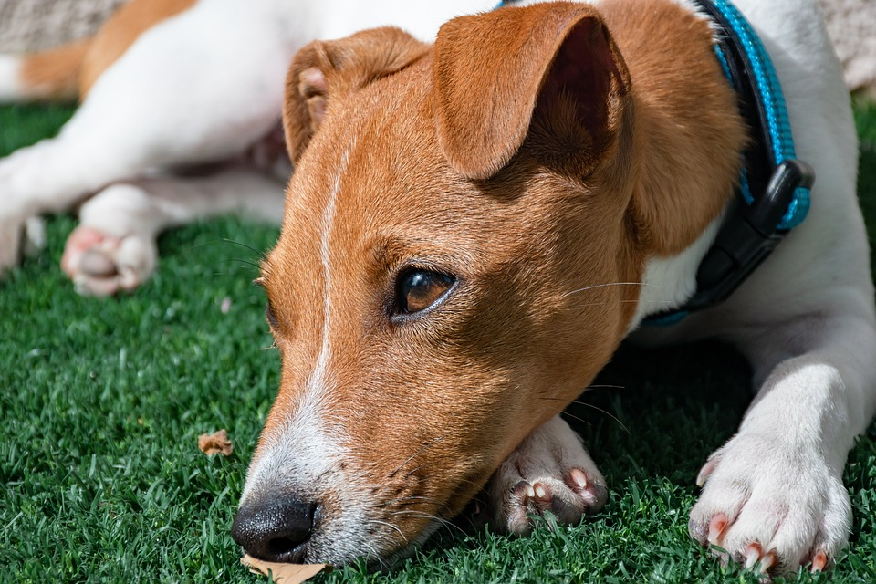
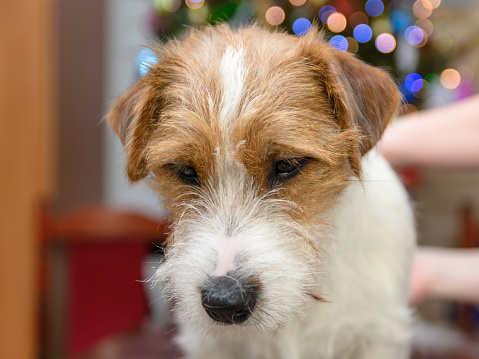
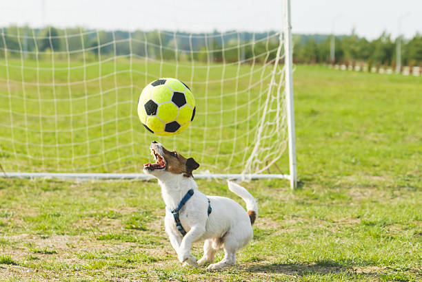
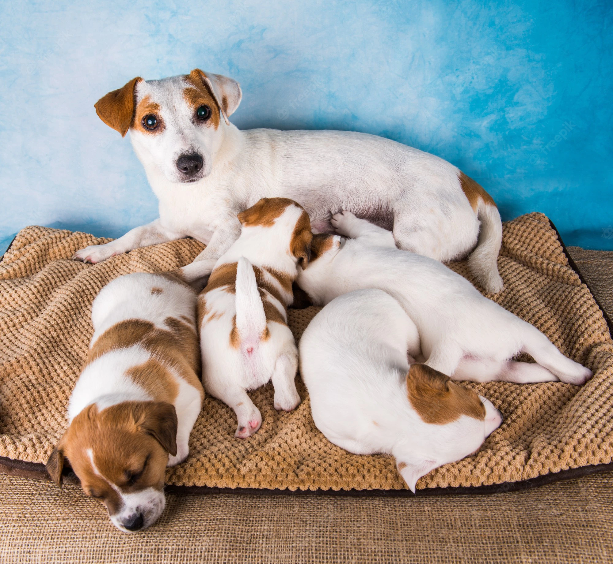
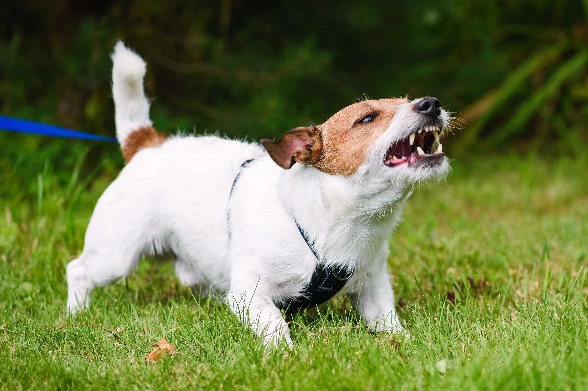

Hej! Här är min sida om hundrasen Jack Russell Terrier
 Basfakta och utseende
Färg: Huvudsakligen vit, men inslag av svart eller brun
Mankhöjd: 25–30 cm
Vikt: 6-8 kg
Päls: Slät, broken eller sträv
Historia och bakgrund
Jack Russell Terrier har sitt ursprung i England men man brukar säga att Australien är dens "hemland".Den brukar klassas som en grythund och används mycket inom jakt. Att det är en grythund betyder att den är effektiv på att jobba under jord, exempelvis gräva sig ner i räv eller grävlingsgryt
Namnet "Jack Russel Terrier" kommer från den brittiska kyrkoherden John "Jack" Russell (1795-1883) som påbörjade aveln av rasen. Han var med och startade den brittiska kennelklubben 1873.
En nära släkting till Jack Russell är hundrasen Parson Russell Terrier. De har ett gemensamt ursprung och därmed många likheter och det kan vara svårt att skilja dem emellan. Här är några skillnader mellan raserna:
| Jack Russell Terrier | Parson Russell Terrier |
|---|---|
| Korta ben | Långa ben |
| Fyrkantig kroppsform, bredare | Rektangulär kroppsform, smalare |
| Väger mindre och har kortare mankhöjd | Mer kroppsvikt och längre mankhöjd |
| Främst vit med svarta eller bruna fläckar | Främst vit med svarta eller bruna fläckar men även vit med svarta och bruna fläckar |
Egenskaper
Jack Russell är en aktiv och energifull hund och är trots sin lilla storlek mycket självständig. Mycket fysisk aktivitet är något som behövs för att denna hundras ska må bra.
Denna ras används mycket inom jakt som spårngingshund på grund av dess jaktinstinkt och exeptionella luktsinne. Dock så är den även populär som endast sällskapshund och fungerar bra i aktiva hushåll som gillar fart, fläkt och en aktiv livsstil!
  Jack Russell Terrier är en mycket populär hundras i Sverige men slår inte Labrador retriver som varit den populäraste rasen sedan 2010.
Här nedan visas en topplista på de populäraste hundraserna i Sverige:
Mer information går att hitta på:
Källor som används för sidan: